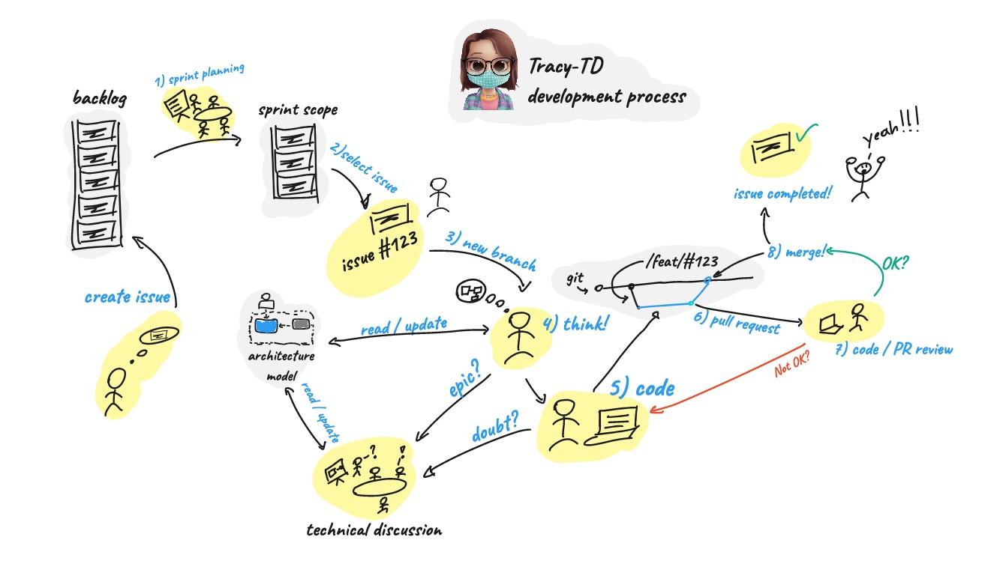

Processo de Desenvolvimento
O processo de desenvolvimento do projeto Tracy-TD segue uma abordagem iterativa e colaborativa, permitindo que a equipe trabalhe de forma eficiente e eficaz. A seguir, descrevemos os passos envolvidos nesse processo:
-
Planejamento da Sprint: No início de cada sprint, a equipe realiza uma reunião de planejamento para definir as metas e prioridades da iteração. Durante essa reunião, as tarefas são discutidas e atribuídas aos membros da equipe.
-
Selecionar tarefa: Com base nas metas estabelecidas, cada membro da equipe seleciona uma tarefa para trabalhar. Essas tarefas estão registradas no sistema de gerenciamento de problemas, como o GitHub Issues, e são acompanhadas de descrições detalhadas.
-
Criar nova branch: Antes de iniciar o desenvolvimento da tarefa, é criada uma nova branch no repositório do projeto. Essa branch é usada para isolar as alterações relacionadas à tarefa específica e facilitar o controle de versão.
-
Pensar!: Antes de começar a codificar, é importante dedicar um tempo para analisar e planejar a abordagem a ser adotada. Nesse momento, a equipe realiza discussões técnicas e busca compreender a melhor forma de resolver o problema em questão.
-
Codificar!: Com o planejamento em mente, os desenvolvedores iniciam a codificação da solução. Eles seguem as melhores práticas de desenvolvimento de software e utilizam as ferramenta5. s e tecnologias adequadas ao projeto.
-
Pull Request: Após concluir o desenvolvimento da tarefa, é feito um Pull Request para integrar as alterações à branch principal do projeto. O Pull Request inclui uma descrição clara das alterações realizadas e pode ser revisado por outros membros da equipe.
-
Revisão de Código / PR: O Pull Request passa por um processo de revisão de código, no qual outros membros da equipe analisam o código, oferecem feedbacks e sugerem melhorias. Essa revisão ajuda a garantir a qualidade do código e a consistência com os padrões definidos.
-
Merge!: Após a revisão e aprovação do Pull Request, as alterações são mescladas à branch principal do projeto. Esse processo garante a incorporação das alterações e a atualização do código-fonte do projeto como um todo.
Discussões Técnicas
Durante todo o processo de desenvolvimento, a equipe também realiza discussões técnicas e atualizações do modelo de arquitetura, buscando manter uma visão clara e atualizada da estrutura e componentes do Tracy-TD.
Esse processo iterativo permite uma evolução contínua do projeto, promovendo a entrega de valor aos usuários e a melhoria constante da qualidade do software.
Diagrama
O diagrama "Development Process" ilustra uma visão geral do processo de desenvolvimento adotado no projeto Tracy-TD. O processo é composto por etapas bem definidas, desde o planejamento das tarefas até a revisão e mesclagem do código. Cada etapa desempenha um papel importante no fluxo de trabalho da equipe, garantindo um desenvolvimento eficiente e de qualidade. Através desse processo, a equipe colabora de forma estruturada e organizada, resultando em entregas consistentes e alinhadas com as metas e objetivos do projeto Tracy-TD.
